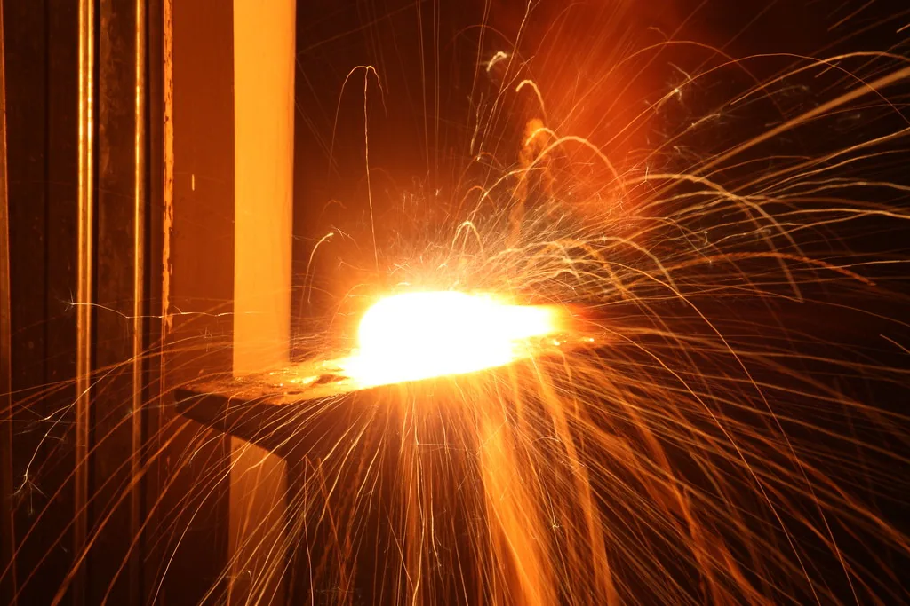
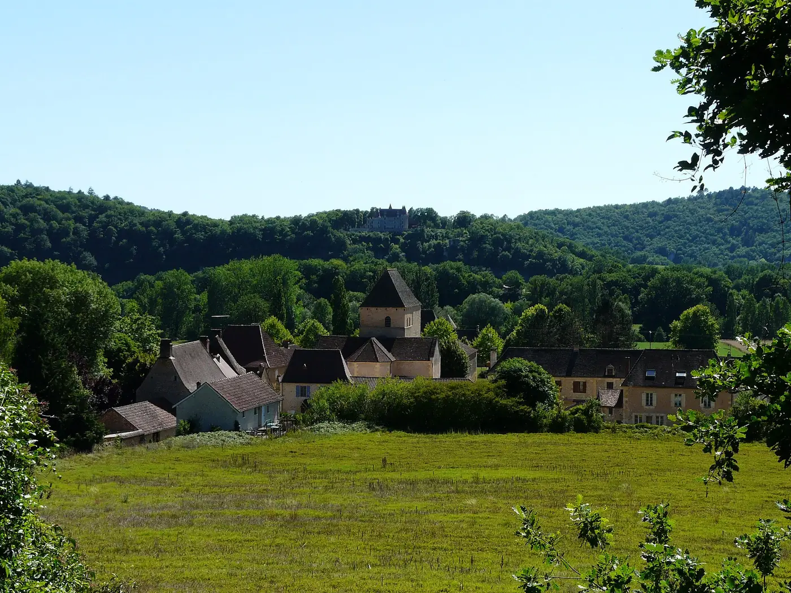

La Forge de Graba
A blacksmith’s forge in Tursac, in the Vézère valley. Iron and steel, worked by hand at the anvil.
Ask for a piece
Steel tells you its heat
When polished steel is tempered, a thin oxide film colours it. Smiths read these colours to judge the hardness of a blade or a tool.
- Light strawabout 220 °C
- Dark strawabout 240 °C
- Bronzeabout 255 °C
- Purpleabout 270 °C
- Blueabout 290 °C
- Greyabout 320 °C
Ask for a piece
Say what you have in mind. Your email app opens with the request written out for the smith.

Find the forge
101 Hameau des Genêts, 24620 Tursac, Dordogne.
Please write before you visit.
Get directions